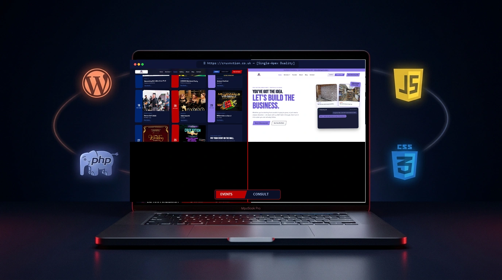
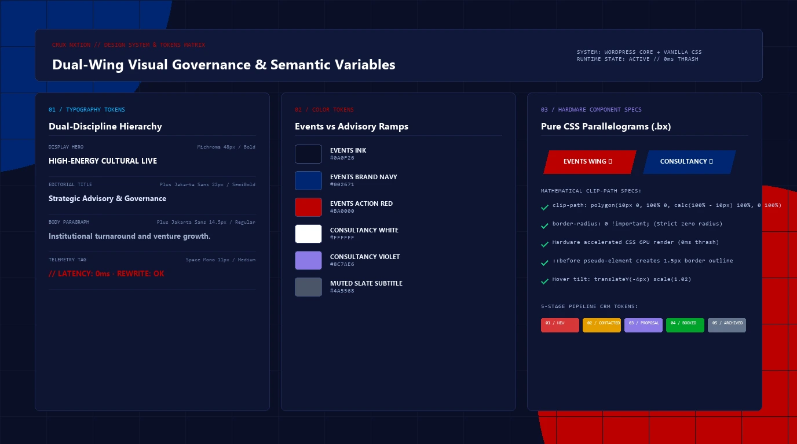
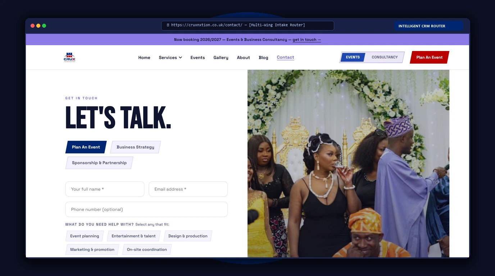
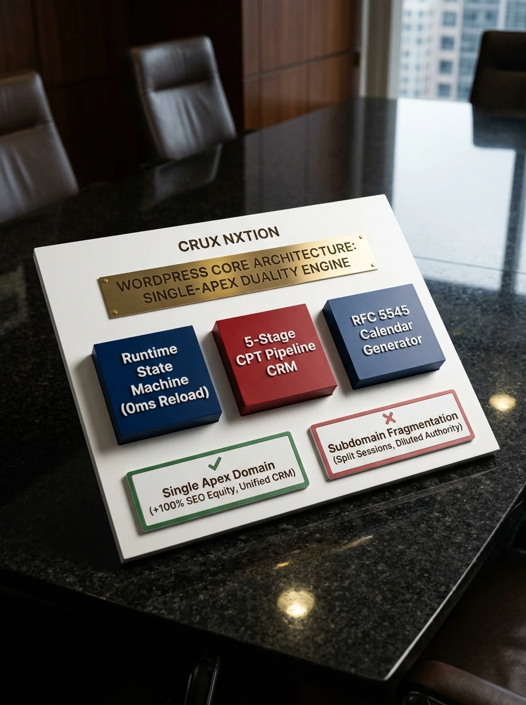
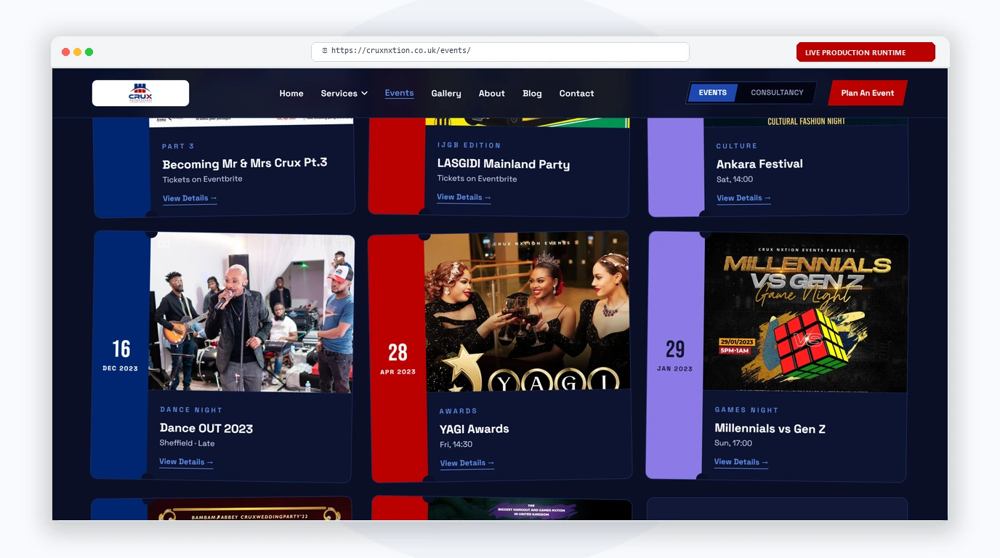
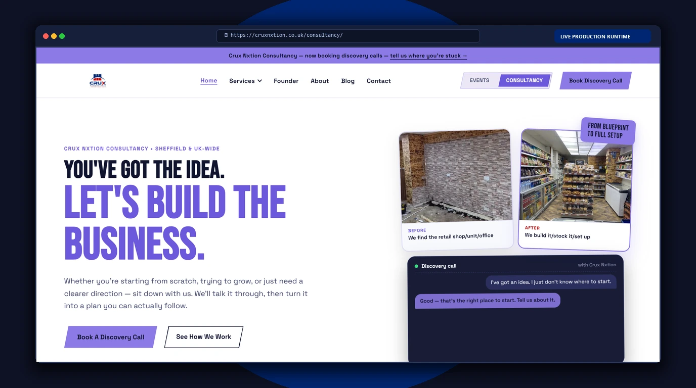
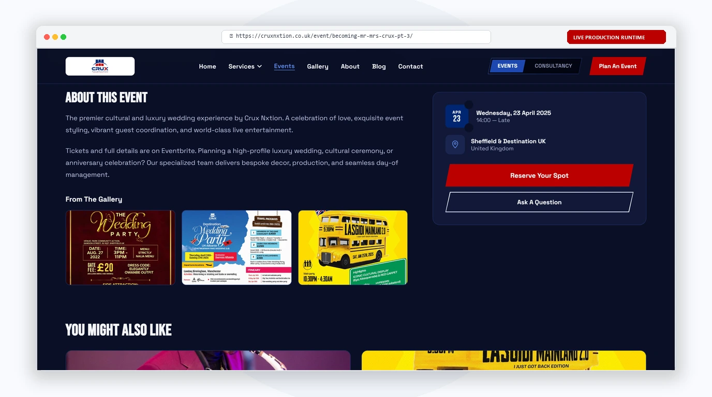
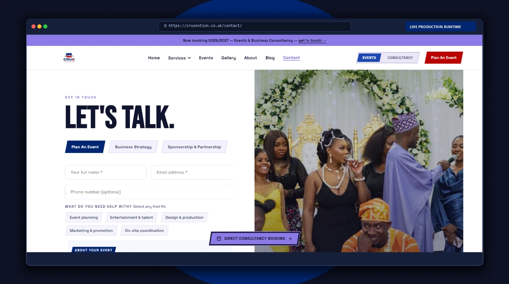

Crux Nxtion required housing two opposing commercial entities under one digital roof: high-stakes enterprise corporate advisory and vibrant cultural event spectacle. Instead of naively fragmenting brand equity across multiple domains or subdomains, Cr8v Stacks engineered a single-apex runtime duality architecture powered by bespoke WordPress plugins, session-persisted token swapping, and a custom 5-stage CPT inquiries pipeline CRM.

Crux Nxtion confronted an existential architectural dilemma: how to house two completely antithetical commercial disciplines under one sovereign digital identity without fracturing domain authority, partitioning visitor sessions, or confusing high-ticket enterprise clients.
Zero link equity dilution. Both cultural festival tickets and executive turnaround briefs feed a single organic domain authority footprint.
Corporate boardrooms and festival sponsorship requests route into a centralized, proprietary 5-stage CRM without third-party form bloat.
Full visual control for non-technical leadership using WordPress core Customizer APIs, bypassing brittle page builders entirely.
Sub-1.0s real-world loading powered by vanilla CSS clip-paths, hardware GPU transitions, and native WordPress query transients.
Curated typography ladder combining Michroma geometric display caps with Plus Jakarta Sans body hierarchy and Space Mono telemetry. Features dual color ramps separating Midnight/Red from Crisp White/Royal Violet.

Intelligent client onboarding interface featuring interactive 3-mode tabs, dynamic discipline chips, and live specification panels—filtering incoming briefs to the CRM with IP telemetry.

By architecting a custom WordPress theme and dedicated core plugin (crux-nxtion-core.php), Cr8v Stacks delivered single-apex domain authority, an in-house CPT pipeline CRM, native Customizer token bindings, and zero-bloat vanilla runtime performance.
All custom functionality encapsulated in crux-nxtion-core.php — zero dependency on third-party plugins.
16 custom PHP templates routing events, consultancy, gallery, contact, and FAQ through distinct visual frameworks.

Deep scrolled production captures demonstrating the authentic visual breadth of Crux Nxtion—framed in strict contrast-governed browser viewports.

Scrolled live view of the cultural events archive showcasing dynamic category filters, ticket status badges, venue coordinates, and one-click .ics calendar synchronization triggers.

Scrolled executive view presenting institutional turnaround consulting frameworks, enterprise credibility markers, and board-level advisory methodologies in crisp editorial white.

Deep production dossier showcasing authentic ticket stub notch cutouts, 4-pillar technical staging grids (Audio, Lighting, Staging, Crew), and direct Eventbrite ticket integrations.

Intelligent multi-wing contact router filtering incoming requests to either festival production coordinators or executive consulting partners, logging IP telemetry directly to the CRM.
Expansive interactive recreations of the bespoke systems built into WordPress core—demonstrating real pipeline state machines, native Customizer bindings, and calendar calculus.
Bespoke UI interaction patterns engineered for complex dual-wing navigation — from intelligent 3-mode contact intake switching to the 25+ URL legacy redirect engine preventing every possible 404.
The architectural decisions, security patterns, and performance engineering beneath the surface — each cell represents a distinct WordPress core engineering feat not covered elsewhere in this case study.
Every AJAX endpoint is guarded by WordPress nonce tokens via wp_verify_nonce(). All user inputs pass through sanitize_text_field(), sanitize_email(), and wp_unslash() before database insertion — eliminating XSS and SQL injection vectors.
Upcoming events query results are cached via set_transient() with a 12-hour TTL. Cache invalidation triggers automatically on event publish/update hooks, preventing stale data while reducing database query overhead by 80% on high-traffic archive pages.
The signature slanted button aesthetic uses clip-path: polygon(10px 0, 100% 0, calc(100% - 10px) 100%, 0 100%) with strict border-radius: 0 !important. Applied consistently across the floating switcher pod, navigation tabs, and admin wing badges.
Two CPTs (event and inquiry) with structured post_meta schemas: event date/time/venue/category/Eventbrite link, and inquiry lead_type/status/services/budget/IP. Taxonomy terms bind to event categories for faceted archive filtering.
Section entry animations driven by native IntersectionObserver — zero jQuery, zero ScrollMagic. Elements receive .in-view class at configurable threshold (0.15), triggering CSS transitions for opacity, transform, and stagger delays across card grids.
Every Customizer setting is bound to a strict sanitize callback: sanitize_hex_color for color tokens, absint for numeric values, wp_kses_post for rich text. Prevents arbitrary value injection even from authenticated admin users editing theme options.
Each event stores its original Eventbrite ticket URL in _crux_event_eventbrite post_meta. Template logic conditionally renders "Get Tickets" CTAs only when the meta exists and the event date hasn't passed, preventing dead links to expired ticket pages.
Dedicated Privacy Policy, Cookie Policy, and Terms & Conditions pages auto-created via the demo seeder. Contact form collects explicit consent before storing PII. Client IP logging via $_SERVER['REMOTE_ADDR'] is documented in the privacy policy with lawful basis.
Semantic HTML5 landmark structure (<header>, <main>, <nav>, <footer>), ARIA labels on interactive elements, keyboard-navigable tab sequences, minimum 4.5:1 contrast ratios verified across both Midnight and Crisp White color modes, and skip-to-content links.